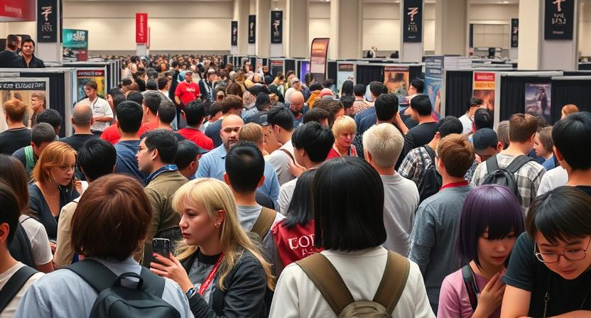
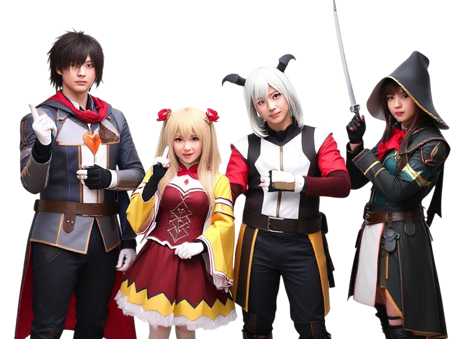
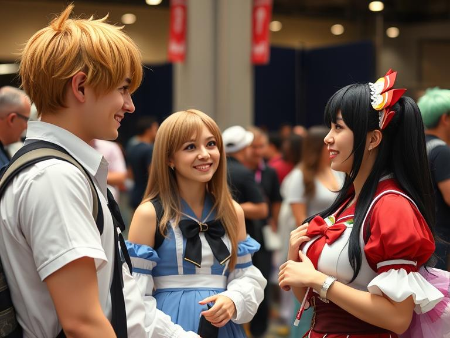
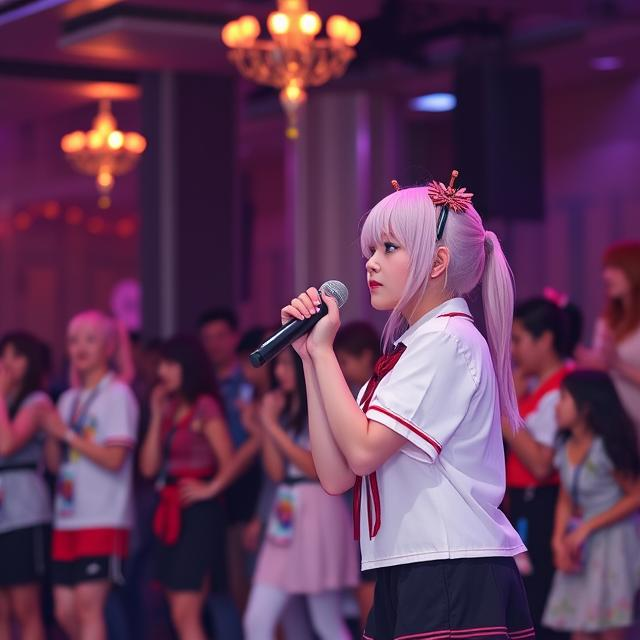
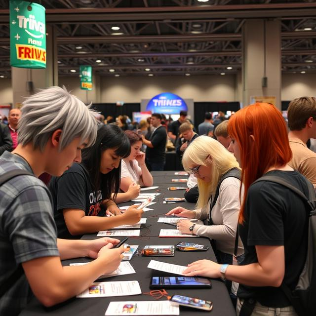
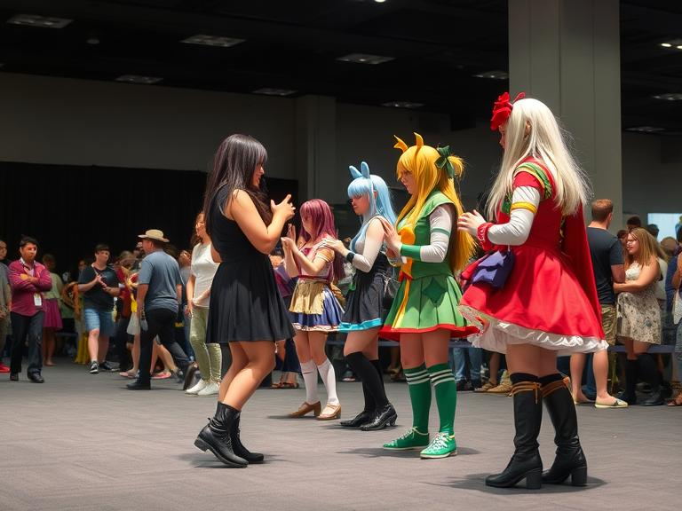
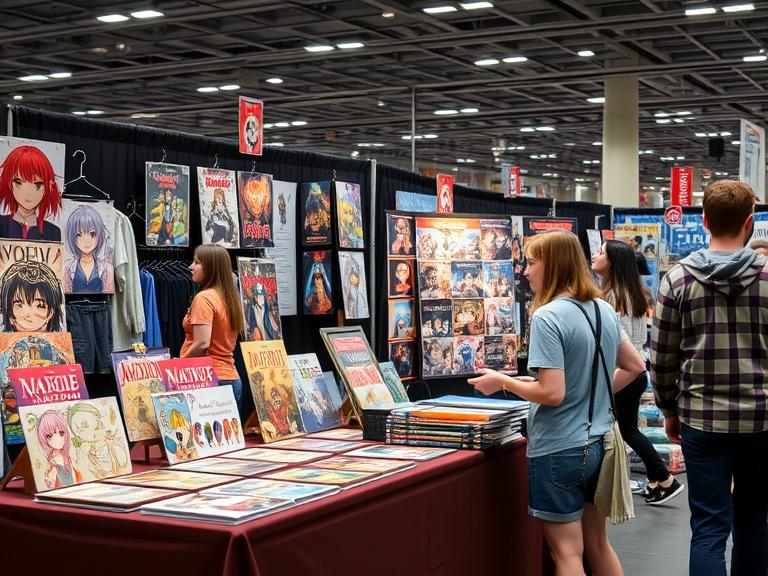
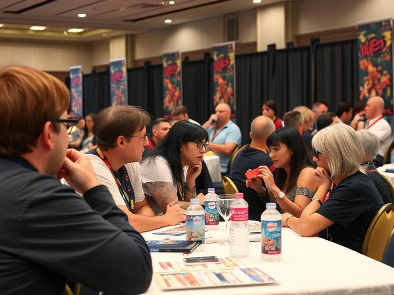
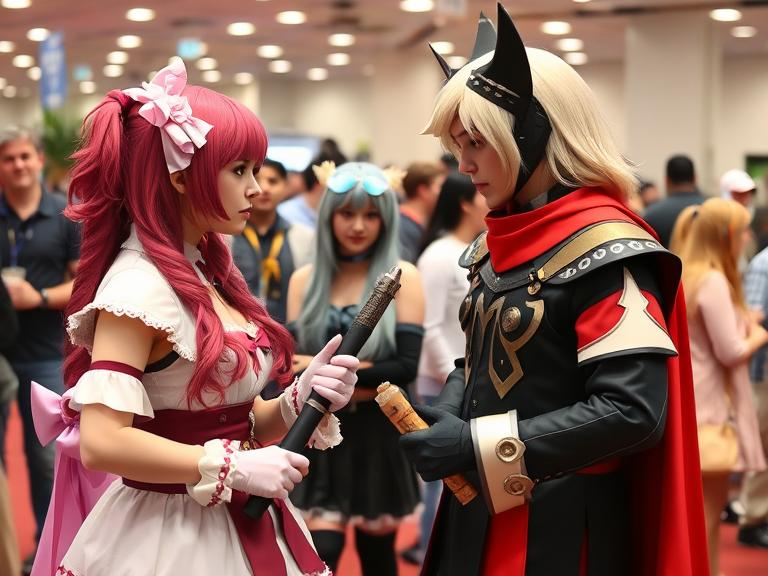
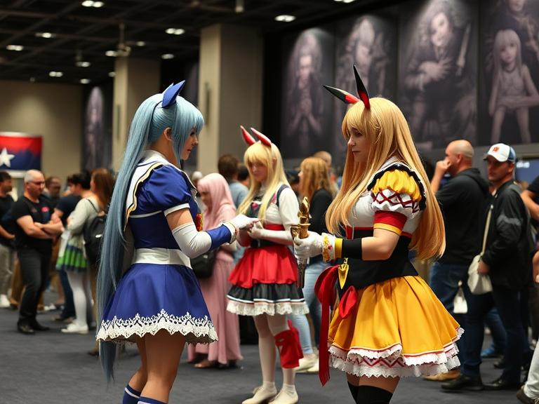

IMAGES USED

Figure 1. Image generated using DeepAI from the prompt ‘A crowd in an anime convention.’

Figure 2. Image generated using DeepAI from the prompt ‘Image of 4 cosplayers posing behind a white background.’

Figure 3. Image generated using DeepAI from the prompt ‘Cosplay competition at an anime competition.’

Figure 4. Image generated using DeepAI from the prompt ‘Artist Alley table for anime fans.’

Figure 5. Image generated using DeepAI from the prompt ‘Special guest panel at an anime convention.’

Figure 6. Image generated using DeepAI from the prompt ‘Volunteers at an anime convention.’

Figure 7. Image generated using DeepAI from the prompt ‘Anime convention, cosplayers talking to each other, smiling.’

Figure 8. Image generated using DeepAI from the prompt ‘Anime Vtuber.’

Figure 9. Image generated using DeepAI from the prompt ‘Japanese woman voice actor.’

Figure 10. Image generated using DeepAI from the prompt ‘Male cosplayer.’

Figure 11. Image generated using DeepAI from the prompt ‘Young Japanese man voice actor.’

Figure 12. Image generated using DeepAI from the prompt ‘Anime convention karaoke competition.’

Figure 13. Image generated using DeepAI from the prompt ‘Anime convention, people doing a trivia competition.’

Figure 14. Image generated using DeepAI from the prompt ‘Anime convention, people doing a cosplay competition.’

Figure 15. Image generated using DeepAI from the prompt ‘Anime convention, artist alley table selling anime merch.’

Figure 16. Image generated using DeepAI from the prompt ‘Anime convention, people at guest panel.’

Figure 17. Image generated using DeepAI from the prompt ‘Anime convention, people doing a cosplay competition.’

Figure 18. Image generated using DeepAI from the prompt ‘Anime convention, people doing a cosplay competition.’
WEBSITE INSPIRATIONS
I'm inspired by OZCOMICON and SMASH!con.
SOCIAL MEDIA ICONS
Social media icons from Icons8.com